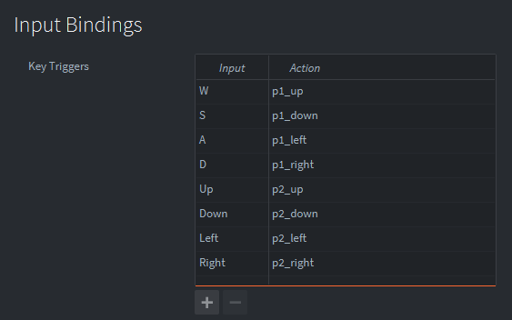

Tutorials for 2D games projects
Worm | The second player.
The game was designed from the outset to be a multiplayer game. We made design choices early in the process to make it easy to add a second, third and fourth player without changing too much of the code.
The steps are:
- Copy the worm1 script and change the attributes for player 2.
- Create the second worm game object.
- Add the additional key bindings.
- Spawn the second player if 2up is pressed on the title screen.
Copy the worm script and change the attributes
- In the assets panel in the 'main' folder, right click, 'worm1.script' and select, 'Copy'.
- In the assets panel, right click 'main' and select, 'Paste'.
- In the assets panel, right click, 'worm1_copy.script' and select, 'Rename'.
- Rename the file, 'worm2'.
- In the assets panel, double click, 'worm2.script'.
- Delete the function spawn_1up(self) including all its code.
- Insert the new modified function:
function spawn_2up(self)
self.segments = {
{x = 25, y = 5},
{x = 25, y = 6},
{x = 25, y = 7},
{x = 25, y = 8} }
-- Draw initial start position
tilemap.set_tile("/field#tilemap", "layer1", 25, 5, self.base_sprite + 11) -- Tail
tilemap.set_tile("/field#tilemap", "layer1", 25, 6, self.base_sprite + 14) -- Middle
tilemap.set_tile("/field#tilemap", "layer1", 25, 7, self.base_sprite + 14) -- Middle
tilemap.set_tile("/field#tilemap", "layer1", 25, 8, self.base_sprite + 6) -- Head
self.direction = {x = 0, y = 1}
self.alive = true
end
What does this code do?
The second player spawns in a different place with a different initial direction.
- In the init function, change the attribute self.base_sprite from 0 to 15. The second worm tiles start at 15+1.
- Replace the on_message function with this code:
function on_message(self, message_id, message, sender)
if message_id == hash("spawn_2up") then
spawn_2up(self)
end
end
What does this code do?
References to spawn1_up have been changed to spawn2_up.
- Replace the on_input function with this code:
function on_input(self, action_id, action)
if action_id == hash("p2_up") and action.pressed then
table.insert(self.input_queue, {x = 0, y = 1})
elseif action_id == hash("p2_down") and action.pressed then
table.insert(self.input_queue, {x = 0, y = -1})
elseif action_id == hash("p2_left") and action.pressed then
table.insert(self.input_queue, {x = -1, y = 0})
elseif action_id == hash("p2_right") and action.pressed then
table.insert(self.input_queue, {x = 1, y = 0})
end
end
What does this code do?
References to p1 have been changed to p2.
Create the second worm game object
- In the assets panel, in the 'main' folder, double click, 'game.collection'.
- In the outline panel, right click, 'Collection' and select, 'Add game object'.
- In the properties panel, change the 'Id' property to, 'worm2'.
- In the outline panel, right click, 'worm2' and select, 'Add Component File'.
- Select, '/main/worm2.script'.
Input bindings
- In the assets panel, in the 'input' folder, double click, 'game.input_binding'.
- Add key triggers for player 2 and make sure the action matches the changes you made in step 9.

Spawn the second player
- In the assets panel, in the 'main' folder, double click, 'main.script'.
- In the on_message function, above the comment, '-- Load the correct collection...', add the condition to spawn the second worm.
if self.worms_alive > 1 then
msg.post("game:/worm2#worm2", "spawn_2up")
end
What does this code do?
If the number of worms in the game is more than one then the second player's worm needs to be spawned. It sends a message to the new worm2.script.
- Save the changes by pressing CTRL-S or 'File', 'Save All'.
- Run the program by pressing F5 or choosing, 'Debug', 'Start / Attach' from the menu bar. You should now have a two player game.

The final polish is to remove the mouse from the screen when the game is playing. Stage 8 >
 Craig'n'Dave | Version 1.3
Craig'n'Dave | Version 1.3